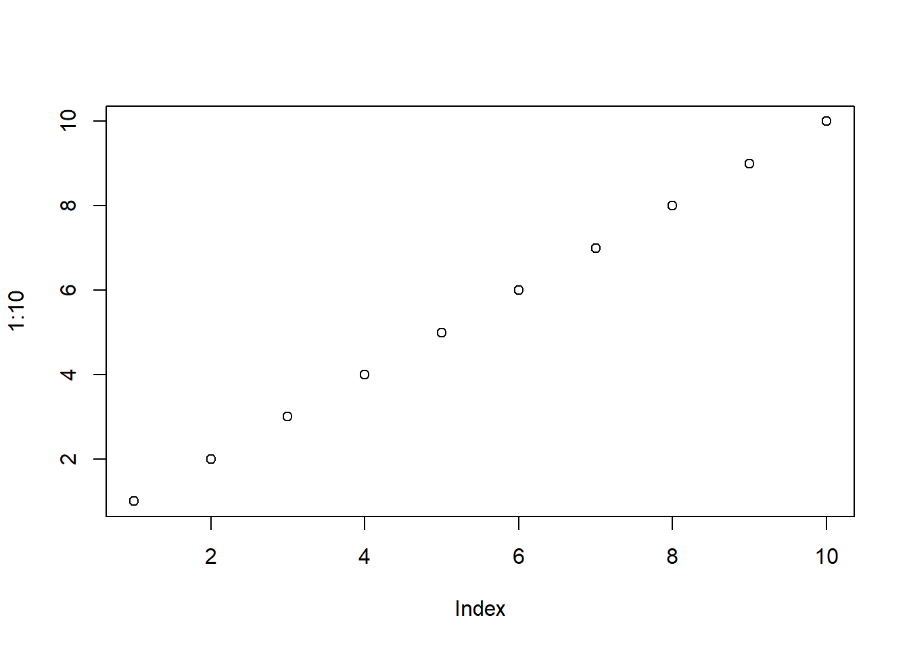
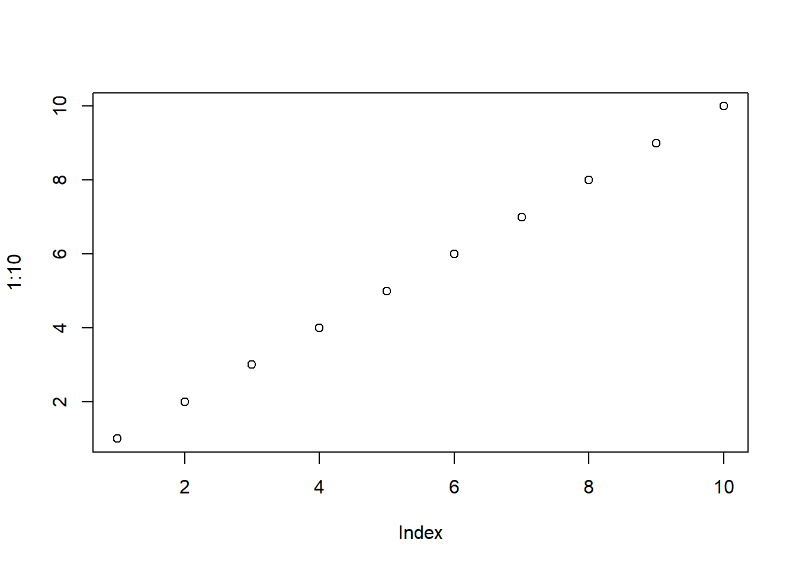
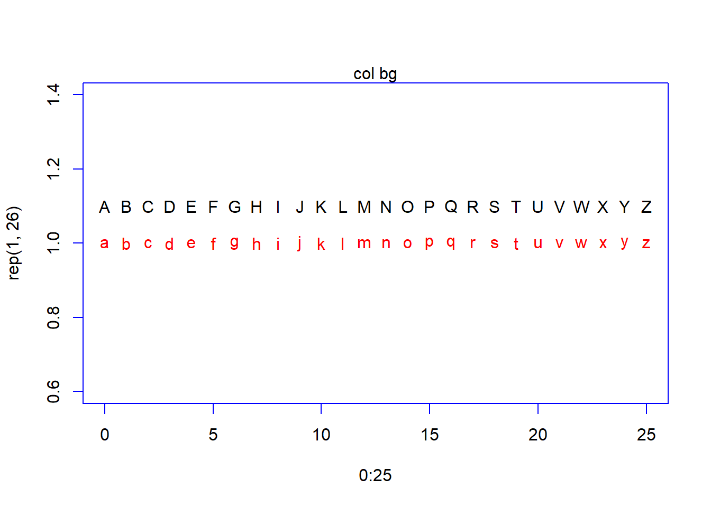
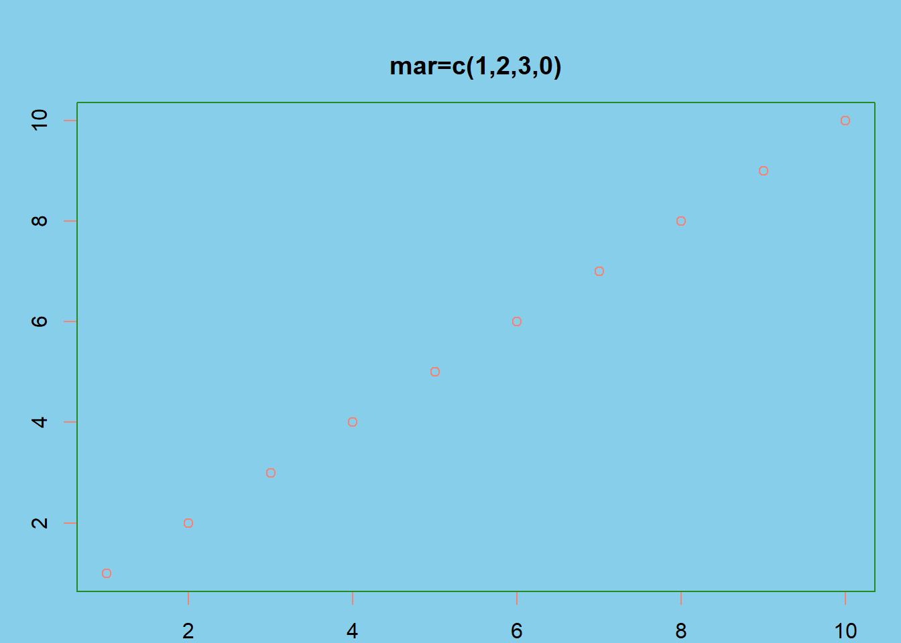
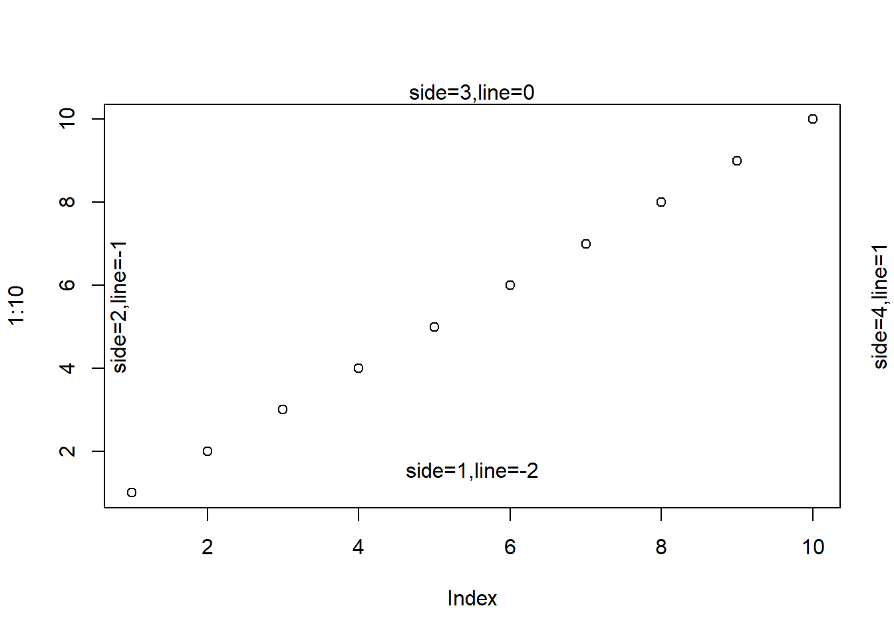
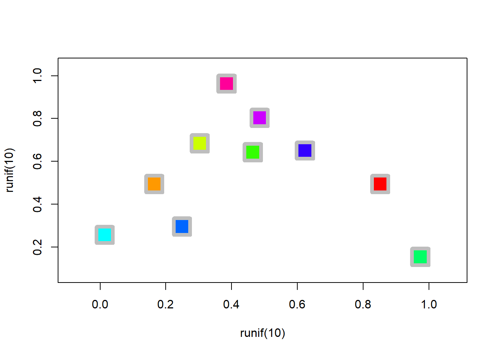
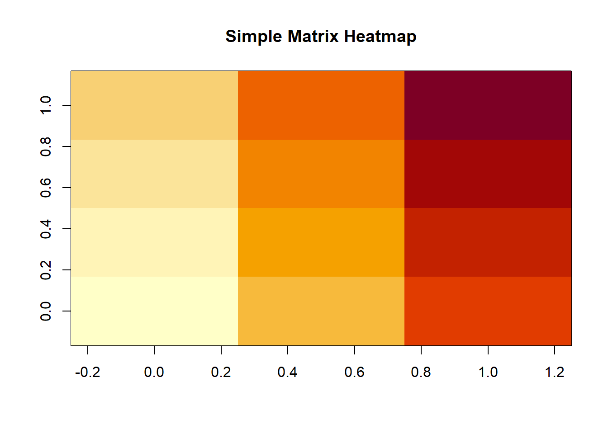
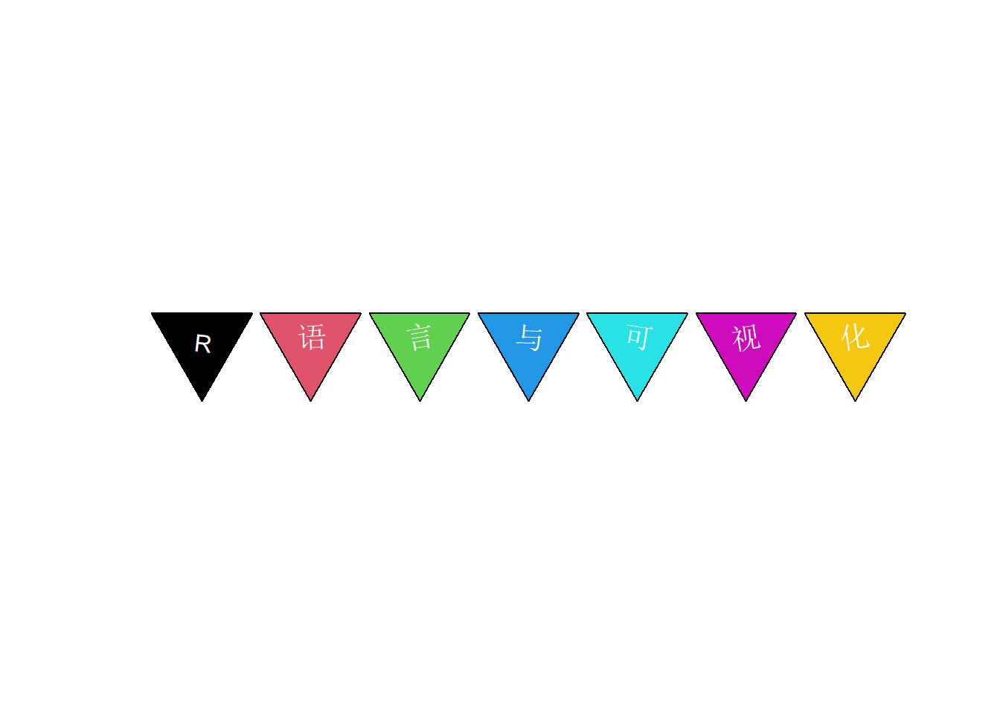
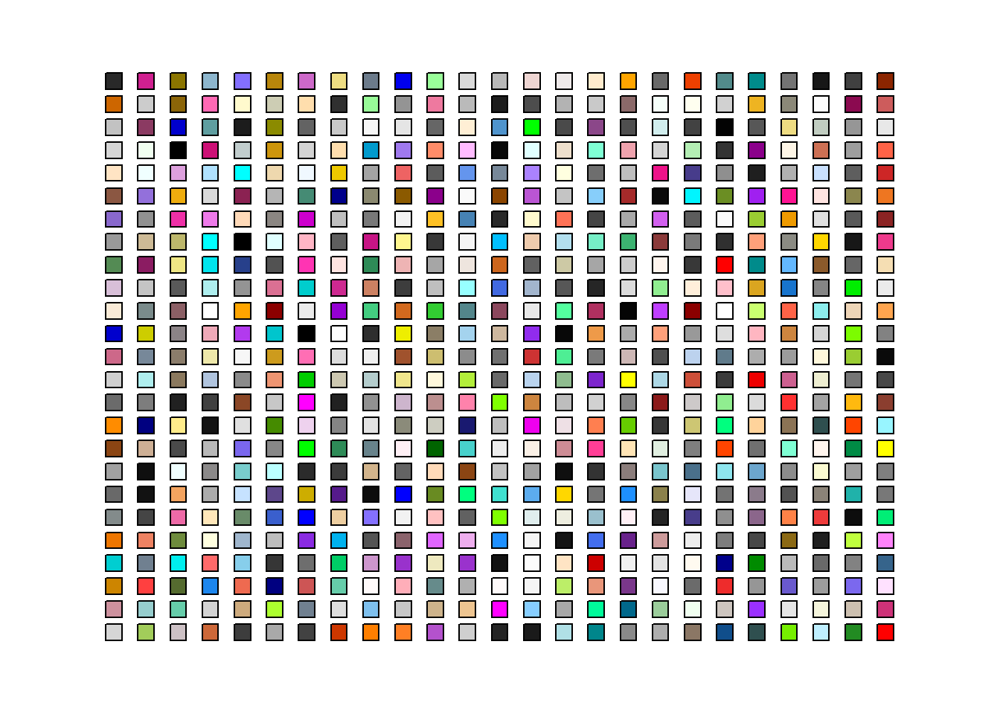

library(tidyverse)
plot(1:10)
虽然ggplot2很流行，有时候基础的R绘图函数更快速便捷，本节了解一下
graphics包
library(tidyverse)
plot(1:10)
# 比较不同绘图参数的作用
com_par <- function(fun, parname, pars, ...) {
npars <- length(pars)
mfrow <- case_when(
npars < 4 ~ c(1, npars),
npars == 4 ~ c(2,2),
npars < 7 ~ c(2, 3),
npars < 10 ~ c(3, 3),
npars < 17 ~ c(4, 4),
TRUE ~ c(4, 5)
)
op <- par(mfrow = mfrow)
walk(pars, function(par) {
do.call(fun, c(list(...), setNames(list(par), parname),list(main=sprintf('%s=%s',parname,par))))
})
par(op)
}parname='type'
pars=c('p','l','b','o','c','h','s','n')
com_par(plot,parname,pars[1:4],1:10)com_par(plot,parname,pars[5:8],1:10)com_par(curve,'n',c(10,50,100),expr(sin),from=-pi,to=pi,type='o')plot(0:25,rep(1,26),pch=0:25)
text(0:25,rep(1.1,26),labels=0:25)
mtext('pch=')plot(0:25,rep(1,26),pch=0:25,col='red',bg='green',fg='blue')
text(0:25,rep(1.1,26),labels=0:25)
mtext('col bg')plot(0:25,rep(1,26),pch=letters,col='red',bg='green',fg='blue')
text(0:25,rep(1.1,26),labels=LETTERS)
mtext('col bg')
plot(16:25,rep(1,10),pch=16:25,col='red',bg='green',fg='blue',cex=seq(2,4,length=10),lwd=3)
text(16:25,rep(1.1,10),labels=16:25)
mtext('cex lwd')# border type
com_par(plot,'bty',c('o','l','7','n',']','c'),1:10,fg='red',xaxt = 'n',yaxt='n')plot(1,type='n',xlim=1:2,ylim=c(0.5,7.5),xlab='',ylab='',main='lty=')
for(i in 1:7) {
abline(h=i,lty=i,col='red',lwd=2)
}od<-par(bg='skyblue',fg='red')
plot(1:10)par(bg='salmon')
plot(1:10)
par(od)
plot(1:10)
plot(1:10)
box(which='plot',col=1,lwd=4)plot(1:10)
box(which='figure',col=2,lwd=4)plot(1:10)
box(which='inner',col=3,lwd=4)plot(1:10)
box(which='outer',col=4,lwd=4)od<-par(mar=c(1,2,3,0),oma=c(1,1,1,1),bg='skyblue',fg='salmon')
plot(1:10,main='mar=c(1,2,3,0)')
box(col="forestgreen")
par(mar=c(1,0,1,0))
plot(1:10,main='mar=c(1,0,1,0)')par(od)
plot(1:10)
plot(1:10)
for(i in 1:4)mtext(text=paste0('side,col,font=',i),i,col=i,font=i)plot(1:10)
for(i in 1:4)mtext(text=paste0('side=',i,',line=',i-3),side=i,line=i-3)
symbols(1:3,rep(1,3),circles = 1:3)
symbols(1:3,rep(1,3),circles = 1:3*10)
symbols(1:3,rep(1,3),circles = 1:3,inches = T)symbols(1:3,rep(1,3),circles = 1:3/100,inches = F)symbols(x=runif(10),y=runif(10),squares = rep(.05,10),fg='gray',bg=rainbow(10),inches = F,lwd=5)
symbols(x=1:4,rep(1,4),thermometers = cbind(rep(1,4),1:4,1:4/4),fg='tomato',bg='skyblue',col='green')symbols(x=1:4,rep(1,4),thermometers = cbind(1:4,rep(1,4),1:4/4),fg='tomato',bg='skyblue',col='green')symbols(x=1:4,rep(1,4),thermometers = cbind(rep(1,4),rep(1,4),rep(.8,4)),fg='tomato',bg='skyblue',col='green')symbols(x=1:4,y=rep(1,4),rectangles = cbind(1:4,4:1),bg='skyblue')symbols(x=1:4,y=rep(1,4),rectangles = cbind(1:4,4:1),bg=1:4)symbols(1:5,rep(1,5),stars=matrix(rep(.5,15),nrow=5),inches = F,bg='salmon')
points(1:5,rep(1,5),pch=3)
symbols(1:5,rep(3,5),stars=matrix(rep(.5,5*3),nrow=5),bg=3,inches = F)
points(1:5,rep(1,5),pch=3)symbols(1:5,rep(4,5),stars=matrix(rep(.5,5*4),nrow=5),bg=4,inches = F)
points(1:5,rep(1,5),pch=3)symbols(1:5,rep(5,5),stars=matrix(rep(.5,5*5),nrow=5),bg=5,inches = F)
points(1:5,rep(1,5),pch=3)symbols(1:5,rep(6,5),stars=matrix(rep(.5,5*6),nrow=5),bg=6,inches = F)
points(1:5,rep(1,5),pch=3)symbols(1,1,boxplots=cbind(1,1,1,2,.5),col='gray',fg='salmon',bg='skyblue',lwd=4)plot(1,typ='n',xlim=c(0,10),ylim=c(0,10))
symbols(1,2,squares=0.5,bg=1,add=T,inches = T)
symbols(2,2,squares=1,bg=2,add=T,inches = T)
symbols(1,8,squares=.5,bg=1,add=T,cex=.5)
symbols(1,8,squares=.5,bg=2,add=T,cex=.5,inches = F)
symbols(2,8,squares=.5,bg=3,add=T,cex=1,inches = F)
symbols(4,8,squares=1/2.54,bg=4,add=T,cex=1,inches = F)
symbols(5,8,squares=1,bg=5,add=T,cex=1,inches = F)
grid()plot(1,type='n',xlim=c(1,5),ylim=c(1,5))
text(3,3,'default',col=1,cex=1)
text(2,2,'adj=c(0,0)',col=2,cex=1,adj=c(0,0))
text(2,4,'adj=c(0,1)',col=3,cex=1,adj=c(0,1))
text(4,2,'adj=c(1,0)',col=4,cex=1,adj=c(1,0))
text(4,4,'adj=c(1,1)',col=5,cex=1,adj=c(1,1))
grid()
points(c(2,2,4,4),c(2,4,2,4),pch=3,cex=5)
# 创建一个矩阵
z <- matrix(1:12, nrow = 3, byrow = TRUE)
z [,1] [,2] [,3] [,4]
[1,] 1 2 3 4
[2,] 5 6 7 8
[3,] 9 10 11 12# 绘制热图
image(z, main = "Simple Matrix Heatmap")
image(t(z[3:1,]), main = "Simple Matrix Heatmap")library(mvtnorm)
# 参数设置
mu <- c(0, 0) # 均值向量
sigma <- matrix(c(1, 0.8, 0.8, 1), nrow = 2) # 协方差矩阵
# 生成数据
x <- seq(-3, 3, length.out = 100)
y <- seq(-3, 3, length.out = 100)
z <- outer(x, y, function(x, y) dmvnorm(cbind(x, y), mean = mu, sigma = sigma))
image(z,asp=1)image(z,col=c('skyblue','white','tomato'))contour(x, y, z, main = "Bivariate Normal Distribution Contour",
xlab = "X", ylab = "Y",asp=1)# 矩阵数据
z <- matrix(runif(100, 0, 1), nrow = 10)
# 自定义颜色
custom_colors <- colorRampPalette( palette.colors(3,palette = 'Set3'))(20)
# 绘制
image(z, col = custom_colors, zlim = c(0, 1), main = "Custom Heatmap")plot(1:20,y=rep(1,20),pch=23,bg=1:20,cex=3)
text(1:20,y=rep(1.1,20),1:20)plot(1:8,y=rep(1,8),pch=23,bg=1:8,cex=3)
text(1:8,y=rep(1.1,8),1:8)text=unlist(strsplit('R语言与可视化',""))
plot(seq_along(text),y=rep(1,length(text)),pch=21,bg=seq_along(text),cex=10,xlim=c(0.5,length(text)+.5),bty='o',xaxt='n',yaxt='n',xlab='',ylab='',mar=rep(0,4))
text(seq_along(text),y=rep(1,length(text)),text,col='white',cex=2)plot_text<-function(text,pch=21,cex1=5,cex2=2){
text=unlist(strsplit(text,""))
plot(seq_along(text),y=rep(1,length(text)),pch=pch,bg=seq_along(text),cex=cex1,srt=-45,xlim=c(0.5,length(text)+.5),bty='n',xaxt='n',yaxt='n',xlab='',ylab='')
for(i in seq_along(text)){
text(i,y=1,text[i],col='white',cex=cex2,srt=runif(1,-10,10))
}
}
plot_text('R语言与可视化',21,7,1)plot_text('R语言与可视化',22,7,1)plot_text('R语言与可视化',23,7,1)plot_text('R语言与可视化',24,7,1)
plot_text('R语言与可视化',25,7,1)
od<-par(mar=c(0,0,0,0))
length(colors())[1] 657colors<-colors()[1:625]
symbols(x=rep(1:25,each=25),y=rep(1:25,25),squares = rep(.5,25*25),bg=colors,inches = F,xlab='',ylab='',xaxt='n',yaxt='n',bty='n')colors<-sample(colors(),625)
symbols(x=rep(1:25,each=25),y=rep(1:25,25),squares = rep(.5,25*25),bg=colors,inches = F,xlab='',ylab='',xaxt='n',yaxt='n',bty='n')
par(od)plot(1:8,pch=15,cex=7,col=palette())## color swatches for palette.colors()
palette.swatch <- function(palette = palette.pals(), n = 8, nrow = 8,
border = "black", cex = 1, ...)
{
cols <- sapply(palette, palette.colors, n = n, recycle = TRUE)
ncol <- ncol(cols)
nswatch <- min(ncol, nrow)
op <- par(mar = rep(0.1, 4),
mfrow = c(1, min(5, ceiling(ncol/nrow))),
cex = cex, ...)
on.exit(par(op))
while (length(palette)) {
subset <- seq_len(min(nrow, ncol(cols)))
plot.new()
plot.window(c(0, n), c(0.25, nrow + 0.25))
y <- rev(subset)
text(0, y + 0.1, palette[subset], adj = c(0, 0))
y <- rep(y, each = n)
rect(rep(0:(n-1), n), y, rep(1:n, n), y - 0.5,
col = cols[, subset], border = border)
palette <- palette[-subset]
cols <- cols [, -subset, drop = FALSE]
}
}
palette.swatch()dotchart(1:12,labels=month.abb,pch=21,bg=1:12,pt.cex=3)class(VADeaths)[1] "matrix" "array" VADeaths Rural Male Rural Female Urban Male Urban Female
50-54 11.7 8.7 15.4 8.4
55-59 18.1 11.7 24.3 13.6
60-64 26.9 20.3 37.0 19.3
65-69 41.0 30.9 54.6 35.1
70-74 66.0 54.3 71.1 50.0rownames(VADeaths)[1] "50-54" "55-59" "60-64" "65-69" "70-74"colnames(VADeaths)[1] "Rural Male" "Rural Female" "Urban Male" "Urban Female"dotchart(VADeaths)dotchart(t(VADeaths))stem(rnorm(100))
The decimal point is at the |
-2 | 431000
-1 | 9875442100
-0 | 9998888887766655444433222111110
0 | 000111112223334445566666667788999
1 | 011111223344566677
2 | 08